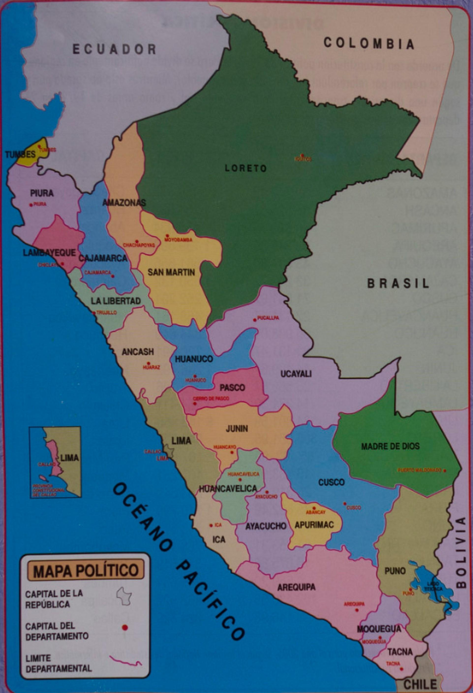

DEPARTAMENTOS DEL PERÚ

El bosque tropical del Amazonas, que abarca gran parte del noroeste de Brasil y se extiende hasta Colombia, Perú y otros países de Sudamérica, es el bosque tropical más grande del mundo y es famoso por su biodiversidad. Está entrecruzado por miles de ríos, incluido el caudaloso Amazonas. Las ciudades aledañas, con arquitectura del siglo XIX de los días de la fiebre del caucho, incluyen a Manaos y Belém, en Brasil, y a Iquitos y Puerto Maldonado, en Perú. Durante el Virreinato, fue uno de los ocho partidos que llegó a tener la intendencia de Trujillo. En 1802 los pueblos de Lamas, Moyobamba y Tarapoto fueron transferidos del partido de Chachapoyas a la recién creada Comandancia General de Maynas. Ya en 1821 tras la independencia con el Reglamento Provisional del libertador don José de San Martín, Trujillo se convierte en departamento y Chachapoyas en una de sus provincias. El 21 de noviembre de 1832 se crea el departamento de Amazonas con tres provincias: Chachapoyas, Pataz y Maynas, transferidas del departamento de La Libertad (llamado Trujillo hasta 1823). En 1840, la provincia de Pataz es retornada a La Libertad y en 1853 se separaron los territorios de Maynas para conformar el Gobierno Político-Militar de Loreto con capital en Moyobamba.4 Fue así que Chachapoyas quedó como provincia única del desmembrado departamento de Amazonas hasta la creación de la provincia de Luya en 1861. Le siguió la provincia de Bongará en 1870, la provincia de Rodríguez de Mendoza en 1932, la provincia de Bagua en 1941 y más recientemente la provincia de Utcubamba y la provincia de Condorcanqui en 1984.
Es una región peruana al norte de Lima en la costa del océano Pacífico. Huaraz, su capital y centro de transporte, se ubica en el Callejón de Huaylas, un valle entre las 2 cadenas montañosas de Áncash. La Cordillera Blanca, al este del valle, tiene cumbres nevadas de más de 6,000 metros. El Parque Nacional Huascarán, que abarca gran parte de la Cordillera Blanca, es hogar de cóndores y jaguares andinos. Dentro del departamento, se diferencian dos tipos de paisajes: la árida llanura costera que domina toda la zona occidental del departamento con un ancho máximo promedio de 15 km, y las zonas montañosas, que ocupan 72 % del territorio departamental y que comprende a los accidentes geográficos de las cordilleras Blanca, Negra, Huallanca, Huayhuash, la Sierra Oriental de Áncash y el Cañón del Marañón, zonas que en conjunto poseen 20 picos por encima de los 6000 m s. n. m. Estas formaciones montañosas dan origen a ríos muy importantes como el Santa y el Pativilca que desembocan en el océano Pacífico, el Yanamayo y el Marañón, afluentes del Amazonas. Unas 340 000 hectáreas de Áncash están conformadas por tres áreas naturales protegidas: el parque nacional Huascarán (Patrimonio de la Humanidad), la zona reservada Cordillera Huayhuash y el yacimiento paleontológico de Yanashallash, ubicados en la sierra departamental.
Es un departamento de la República del Perú situado en el sur del país, en la región andina. Limita por el noreste con Cusco, por el sur con Arequipa y por el oeste con Ayacucho. Con 20 896 km², es el quinto departamento menos extenso, por delante de Tacna, Moquegua, Lambayeque y Tumbes. Se fundó el 28 de abril de 1873. Geológicamente, está situado en la vertiente oriental de la cordillera de los Andes. Su territorio es uno de los más escarpados del país. Es surcado de sur a norte por varios ríos a través de profundos cañones hasta su unión con el río Apurímac en una de las mayores depresiones de la región. El territorio apurimeño fue ocupado por los chancas y los incas hasta la ocupación española. Está dividido administrativamente en siete provincias.45 Tiene una población de 433 952 habitantes, la mayoría quechuahablantes que viven en el área rural.6 La economía se basa principalmente en la agricultura, los servicios y una creciente actividad minera.
Es la capital de la provincia y departamento homónimo, así como la segunda ciudad más poblada del Perú. Desde el punto de vista político, es la sede oficial del Tribunal Constitucional12 y es considerada como la «Capital Jurídica del Perú».1314 La ciudad también es conocida como La Ciudad Blanca o el León del Sur. Está ubicada en la región sur del país, y se extiende a ambas orillas del río Chili, en el denominado valle de Arequipa o valle del Chili, el cual está protegido al norte y al este por la faja cordillerana andina y hacia el sur y oeste por las cadenas bajas de cerros costeños. La proyección censal para el año 2023 estableció una población de 1 157 500 habitantes.2 Su área metropolitana la conforman veintiún distritos conurbados.15 El lugar donde se asienta la ciudad fue fundado el 15 de agosto de 1540. En aquel entonces, se le denominó «Villa Hermosa de Nuestra Señora de la Asunta de Arequipa». El 25 de septiembre de 1541 a través de una Cédula Real dictada por el monarca Carlos V pasó a denominarse «Ciudad de Arequipa». En el periodo virreinal, adquirió importancia por su sobresaliente papel económico16 y por su fidelidad hacia la Monarquía Española.
Es una ciudad peruana capital del distrito homónimo, de la provincia de Huamanga y del departamento de Ayacucho. Se encuentra situada en la vertiente oriental de la cordillera de los Andes a una altitud de 2761 m s. n. m.nota 1 y se caracteriza por un clima templado y seco, con brillo solar todo el año. Es uno de los conjuntos arquitectónicos y artísticos más notables del Perú. Se le conoce como la «Ciudad de las Iglesias»,1 por sus numerosos templos coloniales, y como «Ciudad Señorial» por su arquitectura, tradición y arte.2 El portal Independencia como un verdadero ejemplo de arquitectura barroca en Ayacucho. Portal Independencia. La ciudad tiene fama tanto nacional como internacional gracias a sus piezas de artesanía, motivo por el cual fue declarada como «Capital del Arte Popular y de la Artesanía del Perú». Destacan los tallados en alabastro (material conocido en la zona como piedra de Huamanga), la alfarería –en especial los toros e iglesias de Quinua–, la filigrana del barrio de Santa Ana y principalmente los cotizados retablos ayacuchanos.4 En honor a esta ciudad peruana y a la batalla de independencia ocurrida en su suelo, los países andinos de Argentina, Bolivia, Ecuador y Venezuela, refundaron cada uno, una ciudad y la rebautizaron 'Ayacucho'.
Conocida durante el virreinato como San Antonio de Caxamarca, es una ciudad peruana capital del distrito, de la provincia y del departamento homónimos localizada en el margen oriental de la cadena occidental de la cordillera de los Andes, en el valle interandino que forman los ríos Mashcón y Chonta a 2750 m s. n. m. El valle donde se encuentra enclavada la ciudad es uno de los más grandes de la sierra del Perú. La zona de Cajamarca ya había sido habitada en el pasado durante el Imperio inca, cuando ya se consideraba como un centro poblado importante. En el valle de la actual Cajamarca se desarrolló la cultura Caxamarca, la cual pasó a ser parte integrante del imperio Inca antes de la llegada de los españoles. En 1532 se produjo en este lugar la captura del inca Atahualpa durante la conquista del Perú. En la época del Virreinato del Perú mantuvo su categoría de villa hasta el 19 de diciembre de 1802, poco antes de la independencia, cuando empezó a ser considerada ciudad y recibió su escudo de armas. Es conocida por su celebración del carnaval, y otras fiestas de carácter religioso como Corpus Christi y Semana Santa. Así mismo, destaca por su importante producción de leche y derivados lácteos. También es conocida como la Flor del Cumbe, por su cercanía al cerro y al complejo arqueológico de Cumbemayo. La ciudad está ubicada en el extremo oeste del valle homónimo. Posee una importante producción minera debido a diversas minas cercanas a la ciudad.
Es una ciudad portuaria ubicada en la provincia constitucional del Callao, en el centro-oeste del Perú y a su vez en la costa central del litoral peruano y en la zona central occidental de América del Sur. Tiene al oeste el océano Pacífico y a 15 kilómetros al este del Centro histórico de Lima. Posee un territorio continental de 14,516.55 hectáreas y un territorio insular de 1,719.25 hectáresas. La ciudad se divide territorialmente en dos bahías, ambas están separadas por el distrito peninsular de La Punta. La mayor parte del territorio de la urbe chalaca se extiende a lo largo de la amplia bahía del Callao, y culmina con en el distrito de La Punta y es protegida por las islas San Lorenzo, El Frontón, Cavinzas y el islote Redondo. Hacia el extremo sur de la ciudad se encuentra la histórica bahía denominada la Mar Brava. La ciudad posee dos ríos que desembocan en el centro y norte del Callao; hacia el lado sur de la ciudad, desemboca el río Rímac y hacia el norte de la ciudad, desemboca el río Chillón. Su extensión es de 148,57 km², incluidos 17,63 km² insulares. Se encuentra a 5 m s. n. m.
Es una ciudad del sureste del Perú ubicada en la vertiente oriental de la cordillera de los Andes, en la cuenca del río Huatanay, afluente del Vilcanota. Es la capital del departamento del Cusco y, además, según está declarado en la Constitución peruana, es la «capital histórica» del país. La ciudad, según el INEI, es la séptima más poblada de Perú, y albergaba, en 2017, una población de 437 538 habitantes.1 Antiguamente fue capital del Imperio inca y una de las ciudades más importantes del virreinato del Perú (funcionó como su última sede de gobierno desde diciembre de 1821 hasta la victoria independentista en 18246). Durante la época virreinal, bajo la soberanía de la corona española, se construyeron diversas iglesias, universidades, palacios y plazas barrocas y neoclásicas. Estas construcciones son los atractivos que hacen que la ciudad sea el principal destino turístico del país. Fue declarada Monumento Histórico Nacional en 1972 y Patrimonio de la Humanidad en 1983 por la Unesco. Y suele ser denominada, debido a la gran cantidad de monumentos que posee, la «Roma de América».
Fundada como Villa Rica de Oropesa el 4 de agosto de 1571, es una ciudad peruana, capital del distrito, de la provincia y del departamento homónimos. Está situada en la vertiente oriental de la cordillera de los Andes a orillas del río Ichu, afluente del Mantaro. En las épocas preíncas, Huancavelica fue conocida como la región de los angaraes y chancas.4 La etimología de la palabra Huancavelica posee diversas versiones, pero la más citada proviene de las voz quechua wanka willka, supuestamente 'piedra sagrada',5 aunque esta interpretación no concuerde con la gramática quechua. Fundada el 4 de agosto de 1572 por instrucciones del virrey del Perú don Francisco Álvarez de Toledo con el nombre de Villa Rica de Oropesa, denominación que hacía referencia a la villa de Oropesa donde había nacido el virrey y también al boom económico sostenido por el mineraje en esa época.6 Aunque aún se extraen minerales de alrededores de esta ciudad, Huancavelica se ubica en el centro de una de las zonas de mayor índice de pobreza del país.7 Cuenta con una población estimada de 47 866 habitantes para el año 2015.8 Esta ciudad se caracteriza por la cultura que dejaron incas y españoles en su travesía por este lugar. Así por ejemplo se celebran las fiestas costumbristas religiosas y tradicionales.9 También destaca en gastronomía con platos autóctonos como son el mondongo y la pachamanca.
Es una ciudad peruana, capital del distrito, la provincia y el departamento homónimos en el centro norte del país. La ciudad tiene una población de 235 529 hab., según proyecciones del INEI para 2020. Con una temperatura promedio de 24 °C, llamado por propios y visitantes como “La ciudad del mejor clima del mundo", es tan agradable y benigno su clima que el sol brilla todo el año, en un cielo limpio con un resplandeciente celeste intenso. Su temperatura más baja es en el invierno, es decir en los meses de julio y agosto (21 °C en el día y 17 °C en las noches) y la temperatura más alta es en la primavera, en los meses de noviembre y diciembre (30 °C en el día). Cruzan la ciudad el imponente río Huallaga y el río Higueras con sus limpias aguas, en cuya travesía se pueden apreciar hermosos paisajes de variada vegetación. Este clima por ser seco y soleado es muy benéfico para las personas que adolecen de asma. La temperatura media anual de la ciudad de Huánuco es de 18.7 °C, y tiene 388 mm de precipitación anual.
Es una ciudad del centro sur del Perú, capital del departamento de Ica, situada en el estrecho valle que forma el río Ica, entre el Gran Tablazo de Ica y las laderas occidentales de la cordillera de los Andes. La ciudad de Ica incluye cinco distritos urbanos. Según el Instituto Nacional de Estadística e Informática, es la decimoprimera ciudad más poblada del Perú y albergaba en el año 2021 a una población de 453 947 habitantes.1 En Ica destaca la agricultura extensiva y la agroexportación articulada alrededor de la producción en el valle, situado en medio del desierto del Pacífico. Son importantes el cultivo de uvas, espárragos, palmeras datileras, nueces de pecán, algodón, mangos y paltas, entre otros muchos productos, muchos de los cuales convierten al valle en uno de los más exitosos casos de agro-exportación. El oasis de Huacachina, ubicado a 5 km de la ciudad de Ica, está rodeado de grandes dunas de arena, adecuadas para practicar el deporte denominado sandboard, así como otros deportes de aventura. El 6 de agosto del 2014, mediante el D.S 008-MINAM-2014, fue creada el Área de conservación regional Laguna de Huacachina, con el propósito de rescatar el ecosistema de la zona.
Fundada como Pueblo de Reyes en 1539, es una ciudad peruana, capital del distrito y de la provincia homónimos en departamento de Junín. Está situada a 4105 m de altitud, en la orilla sur del lago Junín. Junín fue elevada a nivel de ciudad por la Ley N.º 9834 el 27 de octubre de 1943 y se le restituyó el título de «Heroica Villa» (otorgado por Simón Bolívar en 30 de octubre del 1824) durante el Gobierno Revolucionario de la Fuerza Armada del general Juan Velasco Alvarado, mediante Decreto Ley n.º 20686 el 6 de agosto de 1974, en conmemoración del Sesquicentenario de la batalla de Junín, en recompensa a la inmolación de sus indefensos habitantes y la patriótica participación de sus montoneros durante la guerra de Independencia. Junín viene del vocablo quechua suni, sunin o shunin que significa 'lugar de altura y dónde hace frío'.
Es uno de los veinticuatro departamentos que, junto con la provincia constitucional del Callao, forman la República del Perú. Su capital y ciudad más poblada es Trujillo. Tiene 2 patrimonios de la humanidad declarados por la Unesco: el parque nacional del Río Abiseo en 1983 y Chan Chan en 1986. Es líder a nivel nacional en el sector agroexportador y en producción de oro.234 Y es el segundo departamento con más electores según el JNE al 2021.56 Y con una población de más de dos millones de liberteños al 2020.7 Posee el segundo parque automotor más grande del Perú.8 Se ubica al noroeste del país. Limita por el norte con departamento de Lambayeque, el departamento de Cajamarca y el departamento de Amazonas; por el este con el departamento de San Martín, por el sureste con el departamento de Huánuco, por el sur con el departamento de Áncash y por el oeste con el Océano Pacífico. Su población según el censo de 2017 era de 1 778 080 habitantes.9 Es uno de los departamentos más poblados —por detrás de Lima y Piura— y con 63,4 hab/km², el tercero más densamente poblado, por detrás de Lima y Lambayeque. Se creó como departamento el 12 de febrero de 1821.10 Y con una población de más de 2 millones de Liberteños al 2020.
Es una ciudad de la costa norte del Perú y capital del distrito y provincia homónimas en el departamento de Lambayeque. Es un importante centro comercial, cultural y educativo ya que alberga algunos de los museos más importantes del país como el Museo Tumbas Reales y el Museo Brüning además de ser hogar de la Universidad Nacional Pedro Ruiz Gallo. Fue fundada en 1553 bajo el nombre de San Pedro de Lambayeque. El nombre proviene del muchik Llampayec, dios mítico de la leyenda de Naylamp, que castellanizado es Lambayeque. Cuenta la leyenda que en una época remota arribó a las playas de la actual caleta San José, en el Perú, una gran flota de balsas extrañas, tripuladas por un brillante cortejo de guerreros extranjeros, que tenían por jefe a un hombre de gran talento y valor llamado Naylamp, quien fundó esta civilización conocida como Sicán o Lambayeque la cual perduro entre los siglos VII - XIV aproximadamente.
Es la capital de la República del Perú.12 Está ubicada en la costa central del país, a orillas del océano Pacífico, integrando una extensa y poblada área urbana, flanqueada por el desierto costero y extendida sobre los valles de los ríos Chillón, Rímac y Lurín. La proyección censal de 2023, establece que la ciudad de Lima cuenta con una población estimada de 10 092 000 habitantes, lo que la sitúa como la urbe más poblada del país.1 Por su parte, Lima Metropolitana engloba a una cifra de 10 151 200 habitantes.13nota 1 Si se considera la provincia constitucional del Callao, la aglomeración total alcanza una población de 11 342 100 habitantes. La organización urbana de Lima se distribuye en diferentes ejes o conos, que incluyen Lima Norte, Lima Este, Lima Sur y Lima Centro. En la actualidad, está considerada como el centro político, económico, industrial, cultural, financiero y comercial del país. En el plano internacional, es la quinta ciudad más grande de América Latina, la cuarta por PBI, la quinta por número de habitantes y una de las treinta aglomeraciones urbanas más pobladas del mundo.14 Por su importancia geoestratégica, ha sido definida como una ciudad global de «clase beta+».
Es un departamento de la República del Perú con capital en la ciudad de Iquitos, situado en el noreste del país, en plena Amazonía. Limita por el norte con Ecuador y Colombia, por el este con Brasil, por el sur con Ucayali y Huánuco, y por el oeste con San Martín y Amazonas. Con 368 852 km² (28 % del territorio nacional), es el departamento más extenso, la séptima mayor entidad subnacional de América Latina —por detrás de cinco estados de Brasil (Amazonas, Pará, Mato Grosso, Minas Gerais y Bahía) y del departamento de Santa Cruz de Bolivia— y, con 2,4 habs./km², el segundo menos densamente poblado, por delante de Madre de Dios. Se fundó el 7 de febrero de 1866. Por su llano territorio discurren sinuosamente extensos ríos drenados desde la cordillera de los Andes que provocan inundaciones estacionales. En esta región, se unen los ríos Marañón y el Ucayali, y nace el curso principal del río Amazonas. El territorio loretano cuenta con más de un millón de habitantes (2023), inicialmente fue poblado por sucesivas oleadas de grupos indígenas errantes. Durante la colonización, pocas misiones tuvieron éxito en formar algunas poblaciones permanentes. A fines del siglo xix, la explosión de la fiebre del caucho produjo súbitas fortunas en manos de los caucheros y la forzada esclavitud de cientos de indígenas. Durante este periodo, se exploraron los ríos de la selva y se consolidó la ciudad de Iquitos, capital departamental desde la escisión del departamento de San Martín en 1897.
Es un departamento de la República del Perú con capital en la ciudad de Puerto Maldonado, ubicado en el sureste del país, en la Amazonía, limitando al norte con Ucayali y Brasil, al este con Bolivia, al sur con Puno y al oeste con Cuzco. Con 85 300 km² es el tercer departamento más extenso —por detrás de Loreto y Ucayali— y con 1,3 hab./km², el menos densamente poblado. Fue creado el 26 de diciembre de 1912]] a partir de territorios de Puno y Cuzco. Recibe su nombre del río Madre de Dios, de cuya cuenca son tributarios la mayor parte de los ríos de la región y sobre cuyas riberas se erige la capital departamental: Puerto Maldonado. Desde el punto de vista jerárquico de la Iglesia católica, forma parte del Vicariato Apostólico de Puerto Maldonado. Se ubica en las regiones selva alta o rupa rupa y en la selva baja o omagua.
Fundada como Santa Catalina de Guadalcázar del Valle de Moquegua el 25 de noviembre de 1541, es una ciudad peruana, capital del distrito homónimo, de la provincia de Mariscal Nieto y del departamento de Moquegua. Esta situada en el Sureste del país a 1.410 m s.n.m. en la vertiente occidental de la cordillera de los Andes, en el valle costero del río Moquegua. Cuenta con una población de 96,456 habitantes para el año 2017.2 La zona fue ocupada por los Tiahuanaco y Wari. Posteriormente surgen las culturas chiribayas y los estuquiñas hasta los incas. La ciudad fue fundada por los españoles. En la república fue ocupada por los chilenos en la Guerra del Pacífico. La ciudad fue reconstruida varias veces por sucesivos terremotos.3 La zona monumental de Moquegua destaca las casonas e iglesias como también sus edificaciones con techos de mojinete. La gastronomía es conocida por sus dulces e ingredientes andinos. En las afueras de Moquegua, en la campiña moqueguana, se cultiva orégano, palta y uva. Destaca también la elaboración de bebidas como pisco, vino, licores y macerados. Asimismo se encuentran varios sitios arqueológicos como Cerro Baúl.
Es un departamento de la República del Perú ubicado en el centro del país, cuya capital es la ciudad de Cerro de Pasco. Comprende una parte andina en su parte oeste y una parte amazónica en el este. Limitando al norte con Huánuco, al este con Ucayali, al sur con Junín y al oeste con Lima. Su extensión es de 25 320 km² y una densidad de 11,1 hab/km². Fue creado el 27 de noviembre de 1944, escindido de Junín. La porción occidental corresponde al Nudo de Pasco, zona de mesetas elevadas y puna, asiento de mineras, mientras que la porción oriental corresponde a la Selva Alta o yunga amazónica habitada por colonos e indígenas de la familia arahuaca. El Departamento tiene una extensión de 25 025.84 km² con una población 306 576 habitantes.
Es una ciudad peruana, capital de la provincia y del departamento homónimos. Es la quinta ciudad más poblada del Perú, según el censo de INEI de 2020,3 albergando una población de 630 244 habitantes y se extiende sobre una superficie de aproximadamente 621.2 km², que abarca los distritos de Piura, Castilla y Veintiséis de Octubre. Está ubicada en el centro oeste del departamento, en el valle del río Piura, al norte del desierto de Sechura, a 981 km al norte de Lima y próxima a la frontera con Ecuador. Fue fundada por el conquistador español Francisco Pizarro el 15 de agosto de 1532 bajo el nombre de San Miguel de Tangarará, siendo la primera ciudad de descendencia española fundada en América del Sur y recibió su escudo de armas en 1537.4 En la actualidad, la ciudad cumple el rol de principal centro comercial, administrativo y de servicios del departamento de Piura.
Es una ciudad de la sierra del sureste del Perú, capital del distrito, de la provincia y del departamento homónimos. Fue poblada inicialmente por los puquina y los uros, alrededor del año 1000 con la caída de la cultura tiahuanaco llegaron los aimaras y con la expansión del Imperio inca en 1472 llegó la población quechua. El primer documento donde se nombra a Puno como tal, es la Cédula de Encomienda del 1 de agosto de 1535, en la que Francisco Pizarro hace entrega a Gómez de Mazuelas la Encomienda de Puno. En 1543, el cronista Pedro Gutiérrez de Santa Clara describe al tambo de Puno en la Ordenanzas de Tambos dictadas por el gobernador del Perú don Cristóbal Vaca de Castro. Posteriormente en 1563, se construye la primera parroquia católica de nativos con el nombre de San Juan Bautista de Puñuypampa, del quechua 'lugar de descanso'.
Es un departamento del Perú situado en la parte norte del país, con capital en la ciudad de Moyobamba. Su ciudad más poblada es Tarapoto. Limita por el norte con el departamento de Amazonas, por el noreste con el departamento de Loreto, por el sur con el departamento de Huánuco y por el oeste con el departamento de La Libertad. Con 51 253 km² es el séptimo departamento más extenso —por detrás de Loreto, Ucayali, Madre de Dios, Cusco, Puno y Arequipa— y, con 14,2 habs./km², el octavo menos densamente poblado, por delante de Ayacucho, Pasco, Moquegua, Amazonas, Ucayali, Loreto y Madre de Dios. Fue creado mediante Ley 201, del 4 de septiembre de 1906. Fue parte de la Intendencia de Trujillo, que llegó a tener nueve partidos que fueron Trujillo, Lambayeque, Piura, Cajamarca, Huamachuco, Chota, Moyobamba, Chachapoyas, Jaén y Maynas. Este último partido, anteriormente, conformaba los departamentos de lo que hoy se conoce como San Martín, Ucayali y Loreto, siendo la Intendencia de Trujillo la más grande del virreinato del Perú, es decir, casi todo el norte del Perú actual. Su primer intendente fue Fernando Saavedra, de 1784 a 1791.4 Después de este, le seguirían Vicente Gil de Taboada (1791-1805 y 1810-1820).5 Mediante una real cédula del 15 de julio de 1802, pasó a formar parte de la entonces flamante de la Comandancia General de Maynas, que abarcaba de iure los actuales departamentos peruanos de Amazonas, Cajamarca, Ucayali y Loreto, además de San Martín.
Es una ciudad peruana, capital de la provincia y del departamento homónimos en el extremo Sur del país. Su área urbana se extiende por cinco distritos conurbados que albergan una población de 325 159 habitantes según estimación y proyección del INEI para 2020.2 Está ubicada a orillas del río Caplina, en un reducido valle en medio del desierto costero peruano. La ciudad de Tacna fue fundada oficialmente el 25 de junio de 1855 durante la época republicana peruana, pero las bases de la ciudad datan desde la colonia, cuando se constituyó en reducción indígena. La ciudad de Tacna fue declarada Ciudad Heroica por el Congreso de la República del Perú el 21 de mayo de 1821 por sus servicios distinguidos a la causa de la Independencia. Fue también la capital de iure de la República Sud-Peruana (1836-1839), y la sede del gobierno de la Confederación Perú-Boliviana. Después de la Guerra del Pacífico fue ocupada y administrada por Chile, debido al Tratado de Ancón, creándose así la provincia chilena de Tacna, junto con el departamento y comuna homónimas. El territorio de Tarata, administrado como departamento y comuna, fue devuelto el 1 de septiembre de 1925 y el resto en el 28 de agosto de 1929 debido al Tratado de Lima.
Es una ciudad peruana, capital del distrito, de la provincia y del departamento homónimos, situada en el extremo Noroeste del país. Se halla cerca de la desembocadura del río Tumbes en el golfo de Guayaquil (océano Pacífico), a 30 km de la frontera con Ecuador. Tiene una población estimada de 115 300 hab. al 2022. Tumbes se encuentra en una zona completamente tropical. Ubicada en la orilla norte del río Tumbes, este le sirve de límite natural ya que la ciudad no se extiende en absoluto a la orilla sur del río. Rodeada de vasta vegetación. Se encuentra a 1.256 km al norte desde Lima. Sin embargo las temperaturas se encuentran fuertemente influenciadas seis meses por la Corriente de Humboldt desde comienzos del mes de junio hasta finales del mes de noviembre, la cual le produce baja precipitación fluvial y temperaturas moderadamente cálidas en el día y frescas por la noche.
Es un departamento de la República del Perú con capital en la ciudad de Pucallpa, ubicado en la zona centro oriental del país, en la región amazónica. Su capital y ciudad más poblada es Pucallpa. Está ubicado en la zona central del país, en la región amazónica. Limita por el norte con Loreto, por el este con el Brasil, por el sur con Madre de Dios y Cusco, por el suroeste con Junín y por el oeste con Pasco y Huánuco. Con 102 199.28 km² es el segundo departamento más extenso —por detrás de Loreto— y, con 4,2 habs./km², es el tercero menos densamente poblado, por delante de Loreto y Madre de Dios. Fue creado el 18 de junio de 1980 y es el departamento más reciente del país. Está conformado por las provincias de Coronel Portillo, Atalaya, Padre Abad y Purús. Ucayali tenía una población, según el INEI, de 621 084 habitantes en 2023, los cuales pertenecen a diversas etnias indígenas de los grupos pano, shipibo y arahuaco.
AMAZONAS